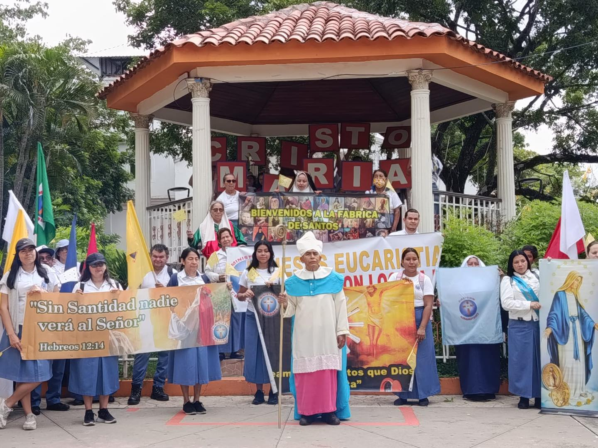
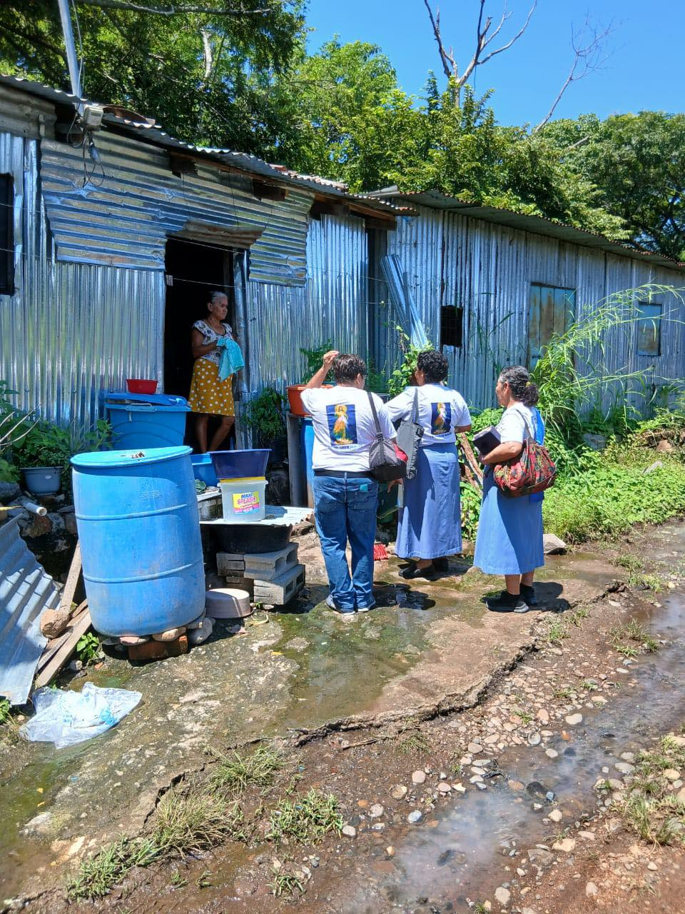

Historial de Caravanas

Caravana de la Esperanza
Una jornada de fe y servicio para llevar apoyo espiritual y material a las comunidades más necesitadas.
15 de Agosto, 2024
San Salvador, El Salvador

Misión de Amor
Visitamos hogares para compartir la palabra de Dios, orar por los enfermos y entregar víveres.
22 de Septiembre, 2024
Santa Ana, El Salvador
Caravana de la Fe
Recorriendo las comunidades para fortalecer la fe y la unidad.
10 de Octubre, 2024
San Miguel, El Salvador
Misión Juvenil
Jóvenes llevando alegría y el mensaje de Cristo a otros jóvenes.
05 de Noviembre, 2024
La Libertad, El Salvador
Caravana de Adviento
Preparando nuestros corazones para la venida del Señor con obras de caridad.
01 de Diciembre, 2024
Sonsonate, El Salvador